54 equations — 54 machine-verified, 0 flagged. Green = verified, amber = flagged (still shows best LaTeX + source crop).
| # | ID | Status | Rendered (KaTeX) | Source crop (PDF) |
|---|---|---|---|---|
| 1 | II-4-1 | single_verified | $$\xi_o = \tan\beta \left(\frac{H_o}{L_o}\right)^{-\frac{1}{2}}$$ | 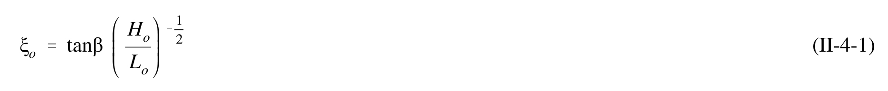 |
| 2 | II-4-2 | single_verified | $$\text{Surging/collapsing} \quad \xi_o > 3.3 \\ \text{Plunging} \quad 0.5 < \xi_o < 3.3 \\ \text{Spilling} \quad \xi_o < 0.5$$ | 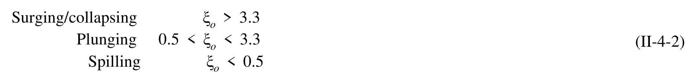 |
| 3 | II-4-3 | agreed_gt | $$\gamma_b = \frac{H_b}{d_b}$$ | 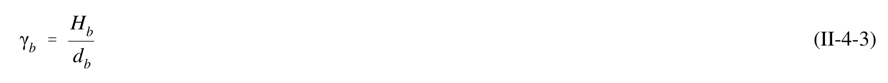 |
| 4 | II-4-4 | agreed | $$\Omega_b = \frac{H_b}{H_o}$$ | 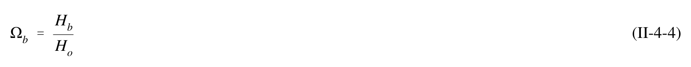 |
| 5 | II-4-5 | agreed_gt | $$\gamma_b = b - a \frac{H_b}{g T^2}$$ | 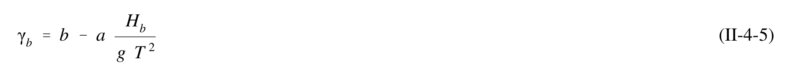 |
| 6 | II-4-6 | agreed | $$a = 43.8 \left(1 - e^{-19\tan\beta}\right)$$ | 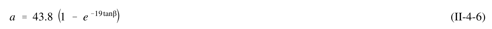 |
| 7 | II-4-7 | agreed | $$b = \frac{1.56}{\left(1 + e^{-19.5 \tan \beta}\right)}$$ | 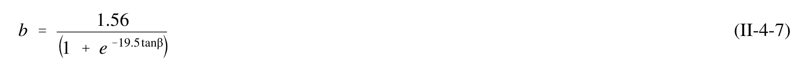 |
| 8 | II-4-8 | agreed | $$\Omega_b = 0.56 \left(\frac{H_o}{L_o}\right)^{-\frac{1}{5}}$$ | 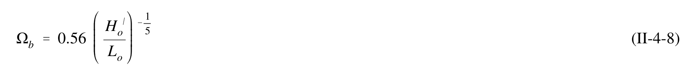 |
| 9 | II-4-9 | agreed_gt | $$H_{rms,b} = 0.42 d$$ | 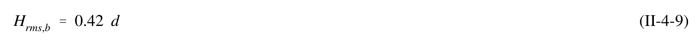 |
| 10 | II-4-10 | agreed_gt | $$H_{mo,b} = 0.6 d$$ | 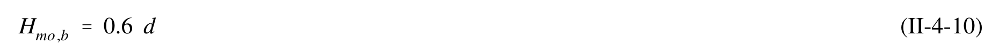 |
| 11 | II-4-11 | agreed_gt | $$H_{mo,b} = 0.1 \text{ L tan h } kd$$ | 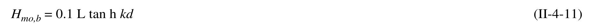 |
| 12 | II-4-12 | agreed_gt | $$H_b = \gamma_b \ d_b$$ | 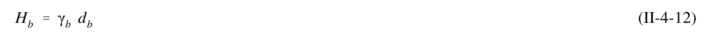 |
| 13 | II-4-13 | agreed_gt | $$H_o = K_R H_o = 1.05 (2.0) = 2.1 \text{ m}$$ | 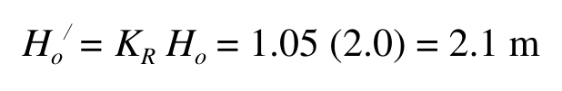 |
| 14 | II-4-14 | agreed_gt | $$L_o = g T^2/(2\pi) = 9.81 (10^2)/(2\pi) = 156 \text{ m}$$ | 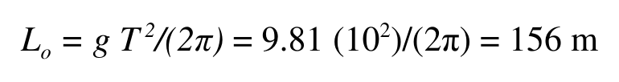 |
| 15 | II-4-15 | agreed | $$\Omega_b = 0.56 (H_o'/L_o)^{-1/5} = 0.56 (2.1/156.)^{-1/5} = 1.3, \quad H_b (\text{estimated}) = \Omega_b H_o' = 2.7 \text{ m}$$ | 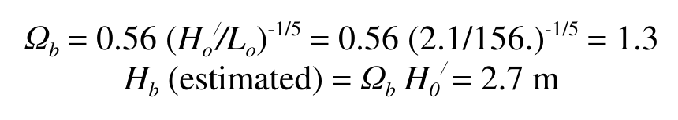 |
| 16 | II-4-16 | single_verified | $$a = 43.8(1 - e^{-19 (1/100)}) = 7.58 \\ b = 1.56 / (1 + e^{-19.5 (1/100)}) = 0.86$$ | 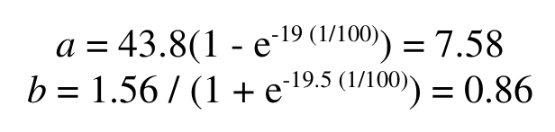 |
| 17 | II-4-17 | single_verified | $$\gamma_b = b - a H_b / (gT^2) = 0.86 - 7.58(2.7)/(9.81 \times 10^2) = 0.84, \quad d_b = H_b / \gamma_b = 2.7/0.84 = 3.2 \text{ m}$$ | 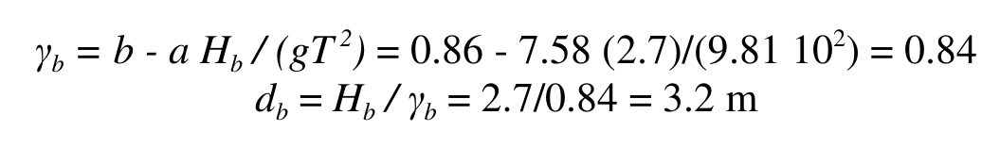 |
| 18 | II-4-13 | agreed_gt | $$\frac{d(EC_g)}{dx} = -\delta$$ | 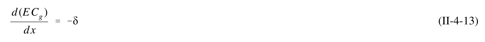 |
| 19 | II-4-14 | agreed_gt | $$\delta = \frac{\kappa}{d} \left( E C_g - E C_{g,s} \right)$$ | 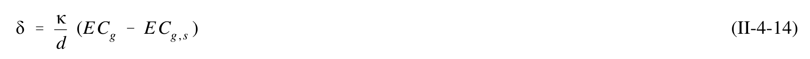 |
| 20 | II-4-15 | agreed_gt | $$H_{stable} = \Gamma d$$ | 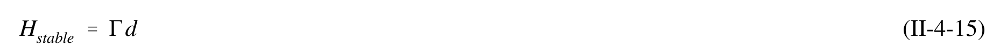 |
| 21 | II-4-16 | agreed | $$\frac{d(H^2 d^{1/2})}{dx} = -\frac{\kappa}{d}\left( H^{2}d^{1/2}-\Gamma^{2}d^{5/2}\right) \quad \text{for} \quad H > H_{\mathrm{stable}} \\ = 0 \quad \text{for} \quad H < H_{\mathrm{stable}}$$ | 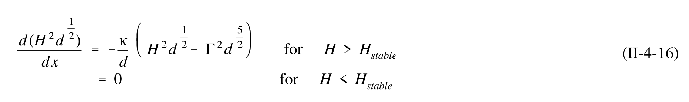 |
| 22 | II-4-17 | single_verified | $$\delta = 0.25 \rho g Q_b f_m (H_{\text{max}})^2$$ | 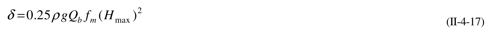 |
| 23 | II-4-18 | single_verified | $$H_{\text{max}} = 0.14L \tanh(kd)$$ | 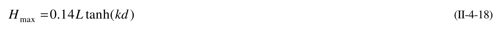 |
| 24 | II-4-19 | single_verified | $$d = h + \overline{\eta}$$ | 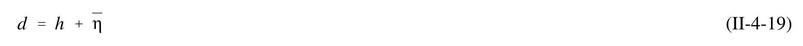 |
| 25 | II-4-20 | agreed_gt | $$\frac{d\overline{\eta}}{dx} = -\frac{1}{\rho g d} \frac{dS_{xx}}{dx}$$ | 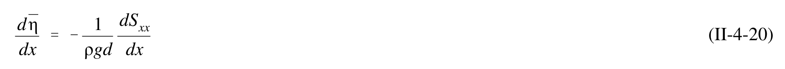 |
| 26 | II-4-21 | agreed_gt | $$\overline{\eta} = -\frac{1}{8} \frac{H^2 \frac{2\pi}{L}}{\sinh\left(\frac{4\pi}{L} d\right)}$$ | 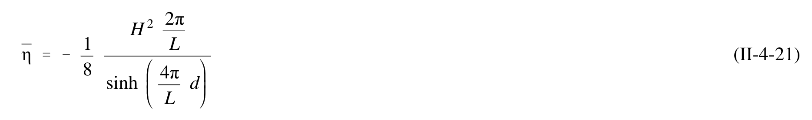 |
| 27 | II-4-22 | agreed_gt | $$\frac{d\overline{\eta}}{dx} = -\frac{3}{16} \frac{1}{h + \overline{\eta}} \frac{d(H^2)}{dx}$$ | 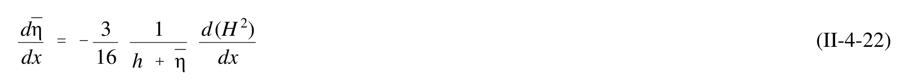 |
| 28 | II-4-23 | single_verified | $$\frac{d\bar{\eta}}{dx} = \frac{1}{1 + \frac{8}{3\gamma_b^2}} \tan\beta$$ | 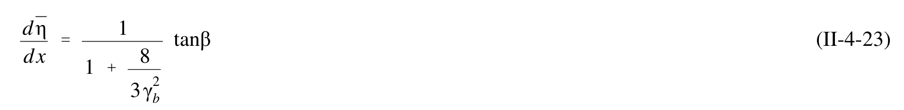 |
| 29 | II-4-24 | agreed_gt | $$\overline{\eta}_s = \overline{\eta}_b + \left[ \frac{1}{1 + \frac{8}{3\gamma_b^2}} \right] h_b$$ | 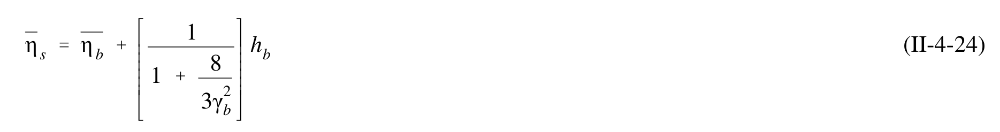 |
| 30 | II-4-25 | agreed_gt | $$\Delta x = \frac{\overline{\eta}_s}{\tan\beta - \frac{d\overline{\eta}}{dx}}$$ | 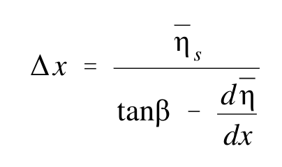 |
| 31 | II-4-31 | single_verified | $$\bar{\eta}_{\max} = \bar{\eta}_s + \frac{d\bar{\eta}}{dx}\Delta x$$ | 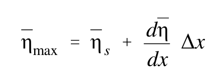 |
| 32 | II-4-32 | single_verified | $$\overline { { \eta _ { b } } } = - 1 / 1 6 \left( 0 . 8 4 \right) ^ { 2 } ( 3 . 2 ) = - 0 . 1 4 \mathrm { m }$$ | 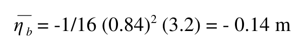 |
| 33 | II-4-33 | single_verified | $$\overline { { \eta _ { s } } } = - 0 . 1 4 + ( 3 . 2 + 0 . 1 4 ) + 1 / ( 1 + 8 / ( 3 \, ( . 8 4 ) ^ { 2 } ) ) = 0 . 5 6 \, \mathrm { m }$$ | 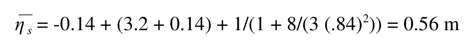 |
| 34 | II-4-34 | agreed_gt | $$d\overline{\eta}/dx = 1/(1 + 8/(3(0.84)^2))(1/100) = 0.0021$$ | 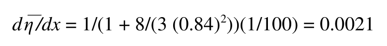 |
| 35 | II-4-35 | single_verified | $$\overline{\eta}_{max} = 0.56 + 0.0021(64.6) = 0.65 \text{ m}$$ | 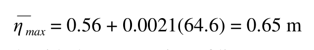 |
| 36 | II-4-26 | agreed_gt | $$\frac{R}{H_o} = \xi_o \quad \text{for } 0.1 < \xi_o < 2.3$$ | 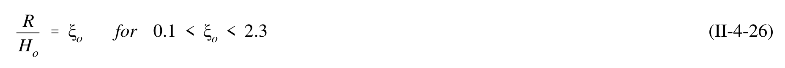 |
| 37 | II-4-27 | agreed_gt | $$\frac{R}{H_o} = (2\pi)^{\frac{1}{2}} \left(\frac{\pi}{2\beta}\right)^{\frac{1}{4}}$$ | 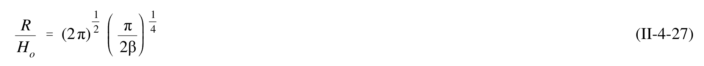 |
| 38 | II-4-28 | single_verified | $$\frac { R _ { \mathrm { m a x } } } { H _ { o } } \, = \, 2 . 3 2 \, \xi _ { o } ^ { \, 0 . 7 7 }$$ | 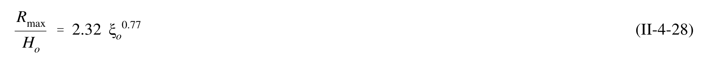 |
| 39 | II-4-29 | agreed_gt | $$\frac{R_{2\%}}{H_o} = 1.86 \, \xi_o^{0.71}$$ | 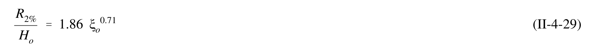 |
| 40 | II-4-30 | agreed_gt | $$\frac{R_{1/10}}{H_o} = 1.70 \, \xi_o^{0.71}$$ | 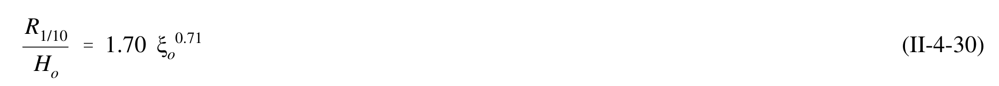 |
| 41 | II-4-31 | agreed_gt | $$\frac{R_{1/3}}{H_o} = 1.38 \, \xi_o^{0.70}$$ | 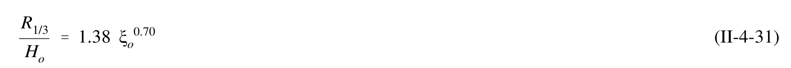 |
| 42 | II-4-32 | agreed_gt | $$\frac{\overline{R}}{H_o} = 0.88 \, \xi_o^{0.69}$$ | 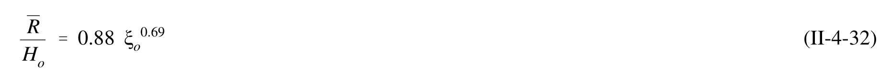 |
| 43 | II-4-43 | single_verified | $$L_o = g T^2/(2\pi) = 9.81 (9^2)/(2\pi) = 126 \text{ m}$$ | 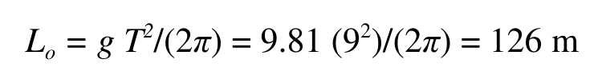 |
| 44 | II-4-44 | single_verified | $$\xi_o = \tan \beta \ (H_o/L_o)^{-1/2} = (1/80) \ (4.0/126.)^{-1/2} = 0.070$$ | 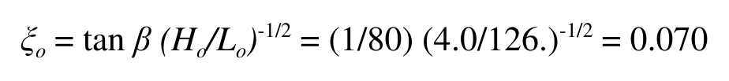 |
| 45 | II-4-45 | agreed | $$R_{max} = 2.32 H_o \xi_o^{0.77} = 2.32 (4.0)(0.070)^{0.77} = 1.2 \text{ m}$$ | 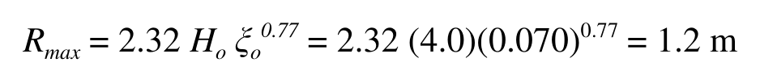 |
| 46 | II-4-46 | single_verified | $$R_{1/3} = 1.38 H_o \xi_o^{0.70} = 1.38 (4.0)(0.070)^{0.70} = 0.86 \text{ m}$$ | 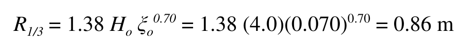 |
| 47 | II-4-33 | agreed_gt | $$u = u_w + u_t + u_a + u_o + u_i$$ | 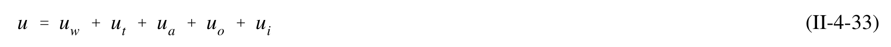 |
| 48 | II-4-34 | agreed | $$U\frac{\partial U}{\partial x} + V\frac{\partial U}{\partial y} = -g\frac{\partial \overline{\eta}}{\partial x} + F_{bx} + L_x + R_{bx} + R_{sx}$$ | 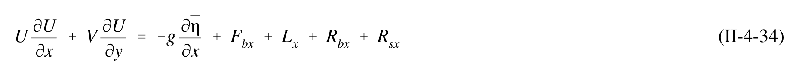 |
| 49 | II-4-35 | agreed | $$U\frac{\partial V}{\partial x} + V\frac{\partial V}{\partial y} = -g\frac{\partial \overline{\eta}}{\partial y} + F_{by} + L_y + R_{by} + R_{sy}$$ | 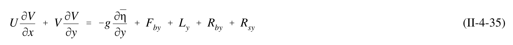 |
| 50 | II-4-36 | agreed | $$\frac{\partial(Ud)}{\partial x} + \frac{\partial(Vd)}{\partial y} = 0$$ | 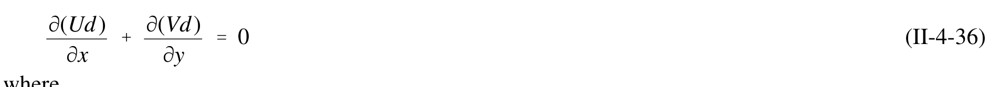 |
| 51 | II-4-37 | agreed | $$R_{by} = -\frac{1}{\rho d} \frac{\partial S_{xy}}{\partial x}$$ | |
| 52 | II-4-38 | agreed_gt | $$S_{xy} = \frac{n}{8} \rho g H^2 \cos \alpha \sin \alpha$$ | |
| 53 | II-4-39 | agreed | $$V = \frac{5\pi}{16} \cdot \frac{\tan\beta^*}{C_f} \cdot \gamma_b \cdot \sqrt{gd} \cdot \sin\alpha \cdot \cos\alpha$$ | |
| 54 | II-4-40 | single_verified | $$V _ { m i d } \, = \, 1 . 1 7 \, \sqrt { g \, H _ { r m s , b } } \, \sin { \, \alpha _ { b } } \, \cos { \, \alpha _ { b } }$$ |